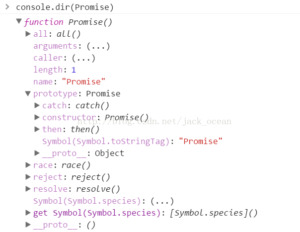

什么是Promise
Promise是异步编程的一种解决方案，比传统的解决方案——回调函数和事件——更合理和更强大。它由社区最早提出和实现，ES6将其写进了语言标准，统一了用法，原生提供了Promise对象。
Promise对象有以下两个特点。
（1）对象的状态不受外界影响。Promise对象代表一个异步操作，有三种状态：
等待态（Pending）、执行态（Fulfilled）和拒绝态（Rejected）。只有异步操作的结果，可以决定当前是哪一种状态，任何其他操作都无法改变这个状态
（2）一旦状态改变，就不会再变，任何时候都可以得到这个结果。Promise对象的状态改变，只有两种可能：从Pending变为Resolved和从Pending变为Rejected。只要这两种情况发生，状态就凝固了，不会再变了，会一直保持这个结果。就算改变已经发生了，你再对Promise对象添加回调函数，也会立即得到这个结果。这与事件（Event）完全不同，事件的特点是，如果你错过了它，再去监听，是得不到结果的。
ES6中的Promise
先在控制台打印出Promise看看，console.dir(Promise);
显示如下;

由上图可知，Promise是一个函数，自己身上有all、race、reject、resolve等方法，原型上有then、catch等方法
ES6规定，Promise对象是一个构造函数，用来生成Promise实例。
Promise的构造函数接收一个参数，是函数，并且传入两个参数：resolve，reject，分别表示异步操作执行成功后的回调函数和异步操作执行失败后的回调函数。其实这里用“成功”和“失败”来描述并不准确，按照标准来讲，resolve是将Promise的状态置为fullfiled，reject是将Promise的状态置为rejected
创造了一个Promise实例：
|
|
上面的代码中，设置了一个2s后执行的定时器。
2s以后输出“执行完成”，然后生成一个随机数，如果数字大于等于0.5，我们认为是“成功”了，调用resolve修改Promise的状态。否则我们认为是“失败”了，调用reject并传递一个参数，作为“失败”的原因。
resolve函数的作用是，将Promise对象的状态从“未完成”变为“已解决”（即从Pending变为Resolved），在异步操作成功时调用，并将异步操作的结果，作为参数传递出去；
reject函数的作用是，将Promise对象的状态从“未完成”变为“拒绝”（即从Pending变为Rejected），在异步操作失败时调用，并将异步操作报出的错误，作为参数传递出去。
Promise示例
|
|
使用Promise包装了一个图片加载的异步操作。如果加载成功，就调用resolve方法，否则就调用reject方法。reject的作用就是把Promise的状态置为rejected，这样我们在then中就能捕捉到，然后执行“失败”情况的回调。看下面的代码。
|
|
getNumber函数用来异步获取一个数字，2秒后执行完成，如果数字小于等于5，我们认为是“成功”了，调用resolve修改Promise的状态。否则我们认为是“失败”了，调用reject并传递一个参数，作为失败的原因。
运行getNumber并且在then中传了两个参数，then方法可以接受两个参数，第一个对应resolve的回调，第二个对应reject的回调。所以我们能够分别拿到他们传过来的数据。多次运行这段代码，你会随机得到下面两种结果：
resolved 1（数字随机，只是个举例） 或者是 rejected 数字太小了（
Promise.prototype.then()
then方法的第一个参数是Resolved状态的回调函数，第二个参数（可选）是Rejected状态的回调函数。
从表面上看，Promise只是简化了层层回调的写法，而实质上，Promise的精髓是“状态”，用维护状态、传递状态的方式来使得回调函数能够及时调用，它比传递callback函数要简单、灵活的多。
|
|
|
|
Promise.prototype.catch()
Promise.prototype.catch方法是.then(null, rejection)的别名，用于指定发生错误时的回调函数。
|
|
上面代码中，promise抛出一个错误，就被catch方法指定的回调函数捕获。
需要注意的是，catch方法返回的还是一个 Promise对象，因此后面还可以接着调用then方法。
|
|
上面代码运行完catch方法指定的回调函数，会接着运行后面那个then方法指定的回调函数。如果没有报错，则会跳过catch方法。
Promise.all()
Promise.all方法用于将多个Promise实例，包装成一个新的Promise实例。
下面是一个例子，其中 runAsync1、 runAsync1 和runAsync3上面的例子中已有定义
Promise.all方法用于将多个Promise实例，包装成一个新的Promise实例。
|
|
上述结果为:
|
|
有了all，你就可以并行执行多个异步操作，并且在一个回调中处理所有的返回数据。
Promise.race()
Promise.race方法同样是将多个Promise实例，包装成一个新的Promise实例。
all方法的效果实际上是「谁跑的慢，以谁为准执行回调」(以执行最慢的那个为准的话这个时候所有的数据都可以获取到的，以数组的形式展现)，那么相对的就有另一个方法race「谁跑的快，以谁为准执行回调」。
我们把上面runAsync1的延时改为1秒来看一下：
|
|
|
|
在then里面的回调开始执行时，runAsync2()和runAsync3()并没有停止，仍旧再执行。于是再过1秒后，输出了他们结束的标志。
这个race有什么用呢？使用场景还是很多的，比如我们可以用race给某个异步请求设置超时时间，并且在超时后执行相应的操作，代码如下：
|
|
requestImg函数会异步请求一张图片，我把地址写为”xxxxxx”，所以肯定是无法成功请求到的。timeout函数是一个延时5秒的异步操作。我们把这两个返回Promise对象的函数放进race，于是他俩就会赛跑，如果5秒之内图片请求成功了，那么遍进入then方法行正常的流程。如果5秒钟图片还未成功返回，那么timeout就跑赢了，则进入catch，报出“图片请求超时”的信息。